Georg Cantor: German (1845–1918)
William Shakespeare is without a doubt one of the greatest writers and dramatists in history. Many consider him to be the greatest, at least in the English language. His plays are still very popular throughout the world, although they were written about 400 years ago. They are timeless masterpieces and they will never become out of date, since they can easily be reinterpreted in diverse cultural and political contexts in modern productions. While there exist immense amounts of literature on Shakespeare’s works, little is known about his life. In fact, the biographical records are so sparse that in the middle of the nineteenth century, doubts regarding the authorship of the works attributed to him began to be expressed. Proposed alternative candidates include the philosopher and statesman Francis Bacon (1561–1626), the poet and playwright Christopher Marlowe (1564–1593), and Edward de Vere, 17th Earl of Oxford (1550–1604). Today, only a very small minority of academics still pursue theories on alternative authorships, which are, however, generally considered as fringe beliefs, against the scholarly consensus that William Shakespeare is indeed the author of the works published under his name. Yet during the last decades of the nineteenth century, discussing theories supporting or refuting the existence of a hidden author of the Shakespearean works was very fashionable in various academic circles, not only among the experts in the field.
In 1896, and the following year, the well-known German mathematician Georg Cantor (1845–1918) published two pamphlets making a case for the theory that Francis Bacon was Shakespeare, which remained the most popular of the alternative-authorship theories until the early twentieth century. Cantor had begun an intense study of Elizabethan literature in order to distract him from mathematics after he had suffered a severe personal crisis. His crisis was triggered by the strong criticism and rejection of his mathematical work by some of the most distinguished mathematicians of his time. The French mathematician Henri Poincaré (1854–1912) referred to Cantor’s ideas as a “grave disease” infecting the discipline of mathematics, and the German mathematician Leopold Kronecker (1823–1891) attacked Cantor even personally, calling him a “scientific charlatan” and a “corrupter of youth.” What was so controversial about Cantor’s work?
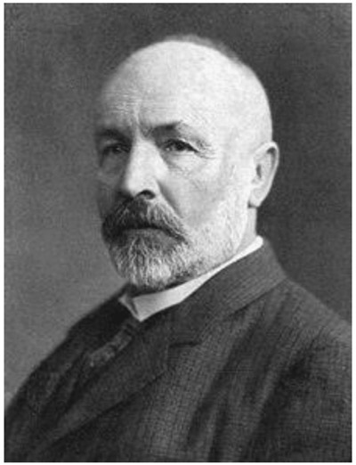
Figure 37.1. Georg Cantor.
Georg Cantor was born in St. Petersburg, Russia, on March 3, 1845, and moved with his family to Germany at age 11; throughout his school years he showed outstanding skills in mathematics and in 1860 he graduated from high school with distinction. He then studied mathematics at the Swiss Federal Polytechnic and at the University of Berlin, receiving his doctorate degree in 1867. Cantor, often referred to as the originator of set theory, had invented new notions of mathematical infinities, based on a brilliant idea for comparing sets containing infinitely many elements. An example of a set containing infinitely many elements is the set of the natural numbers ℕ = {1, 2, 3, ...}, but there also exist other infinite sets of numbers. So, let’s see what happens when we try to compare two infinite sets. Let us consider the set of all integers ℤ = {...,–3,–2,–1, 0, 1, 2, 3, ...} and compare its size with the set ℕ. We may conclude that ℤ is substantially larger than ℕ, essentially twice as large, to be more specific. This seems to be a perfectly reasonable and modest assumption that nobody would question. But since we know that ℕ is infinite, our assumption of ℤ being larger than ℕ implies that ℤ should be even “of greater infinity,” in some sense. But what should that mean? Moreover, between any two integers we can find numerous fractions. Hence the set of all fractions (or rational numbers), ℚ should be “of much greater infinity” than ℤ, but how much more? And what about all the real numbers? Is there any way to “measure” infinities? Cantor was the first to discover that such questions can indeed be addressed and answered in a mathematically rigorous way. He found a very simple, but brilliant, method to compare the sizes of different sets, even if they are infinite. He also established the basic mathematical notion of a set and developed the field of set theory, which is now one of the foundations of modern mathematics. To explain Cantor’s brilliant idea for comparing sets, suppose we are given two sets, A and B, both of which contain only a finite number of elements (see fig. 37.2).
Then one (and only one) of the following three statements must be true:
- Set A has more elements than set “uncountable.” B.
- Set A has fewer elements than set B.
- Both sets A and B contain the same number of elements.
Is there any way to find out which of these statements is true without actually counting the elements of A and B? Yes, there is! We just have to pair each member of A with a corresponding member of B, for instance, by drawing a line from one to the other (see fig. 37.3).
If we manage to do this for all elements of A and B and no elements are omitted from either set, then for each member of A there must be exactly one “partner” element in B, and thus both sets must contain the same number of elements. In mathematics, this is called a one-to-one correspondence between the elements of the two sets. Although this method of comparing sets is, in fact, very old, since it is actually nothing other than “counting with fingers,” Cantor was the first to recognize that this strategy can also be applied to infinite sets.
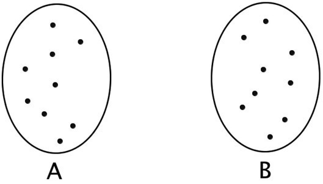
Figure 37.2.
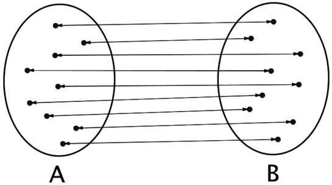
Figure 37.3.
Cantor’s notion of a one-to-one correspondence enables us to compare two infinite sets, since we don’t have to actually count the number of elements in each of the sets separately, and then compare the numbers. We just need to find out whether we can establish a one-to-one correspondence between the elements of the two sets. Above we tried to convince you that there are many more rational numbers (or fractions) than integers and more integers than natural numbers. Astonishingly, this is wrong. It is possible to establish a one-to-one correspondence between ℕ and ℤ, for example by numbering the members of ℤ as follows: Let the first integer in our sequence be the number 0, the second integer the number 1, the third integer -1, the fourth 2, the fifth -2, the sixth 3, and so on. This numbering scheme obviously puts ℕ and ℤ into a one-to-one correspondence, showing that both sets are actually “of equal size,” which is counterintuitive and upsetting, even for many mathematicians at the time Cantor published his ideas. Cantor even showed that also the rational numbers can be put into a one-to-one correspondence with the natural numbers. Another way of saying this is that we can give all the rational numbers a waiting number in an infinite line. We won’t give a detailed proof here, but the essential idea in Cantor’s proof is not too difficult to grasp. Considering only positive fractions for the moment, we can order them in a table by placing the fraction
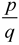
in the cell at the intersection of row p and column q (see fig. 37.4).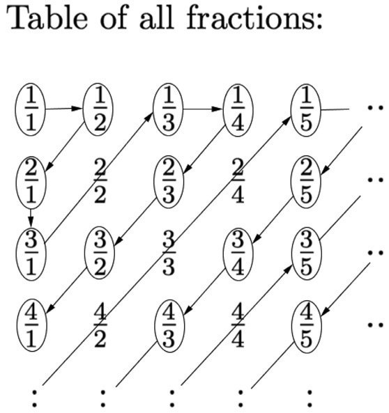
Figure 37.4.
For instance, the fraction
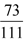
will be in the table at the intersection of the 73rd row and the 111th column. Now we want to put all positive fractions in a waiting line. Of course, this waiting line will never end, since the table never ends either; but that doesn’t matter. We only have to make sure that every fraction will be included. To achieve this, Cantor proposed a clever “diagonal” counting scheme: We start at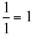
and draw an arrow to the right, getting to . From here we move on diagonally downward to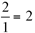
, then straight downwrd to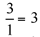
, then diagonally upward, arriving at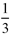
(we skipped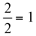
because it has already been counted). Now the whole procedure is repeated—that is, “one to the right and diagonally downward until we reach the first column, then straight down and diagonally upward.” Whenever we encounter a fraction that is equivalent to one that has already gotten a number, we skip it (these are the bypassed fractions in fig. 37.4). To see why a diagonal counting scheme is essential, the following illustration might be helpful: Suppose you have a robotic lawnmower and the infinite table of fractions in figure 37.4 defines the area to be mowed. How should the lawnmower move in order to reach every piece of this infinite lawn? Since the infinite lawn has only one corner, it must start there and work its way in diagonal serpentines away from that corner—following the infinite waiting line drawn in figure 37.4. By using Cantor’s clever diagonal scheme, we manage to put all fractions in a waiting line without omitting any one of them. We have, therefore, established a one-to-one correspondence between all positive fractions and the natural numbers: The first fraction is , the second fraction is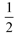
, the third one is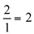
, the fourth one is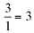
, and so on (see fig, 37.4). Every fraction gets a number given by its position in the waiting line. So far we have omitted the negative fractions, but we can now simply slip each negative fraction after the corresponding positive one in the line, and place the zero at the very first position. Because we can pair each rational number with a natural number, and no numbers are omitted from either set, there must be just as many natural numbers as there are rational numbers. A set whose members can be put in a waiting line without missing any one of its elements is called a countable set. So Cantor proved that ℚ is countable, a very surprising result!Encouraged by this result, we might ask whether it is also possible to put the real numbers (that is, the rational and the irrational numbers) into a one-to-one correspondence with the natural numbers. Cantor showed that this is impossible, since no matter how cleverly we try to arrange the real numbers to put them in a waiting line, there will always be some numbers left over. To be precise, for any proposed list or counting procedure of all real numbers, we can always construct a number that cannot be included in this list. Real numbers can have infinite and nonrepeating sequences after the decimal point. It is this property that makes them “uncountable.” An uncountable set is a set that contains too many elements to be countable and is, therefore, “larger” than the set of natural numbers, ℕ.
Suppose somebody claims to have found a procedure to enumerate all positive real numbers smaller than 1 (this is only a subset of all real numbers). All such numbers will start with a zero and a decimal point, followed by an infinite sequence of digits, if we append an infinite sequence of zeros whenever we encounter a number with a finite fractional part. You may ask him to tell you which number is first in his list, which number is second, and so on. Assume hypothetically that you write down each number, one after the other, thereby producing an infinite list of numbers with infinite fractional parts. We show that we can always write down a number between 0 and 1 that is not a member of his list, implying that his counting scheme does not include all real numbers. Our “magic number” must of course start with a zero and a decimal point. We obtain the first digit after the decimal point by looking up the first digit after the decimal point of the first number in his list and then write down the next-largest digit (for example, if we encounter 0, we write down 1, if we encounter 1, we write down 2, etc.) or, if the digit is 9, then we write down a 0. This will be the first digit after the decimal point of our “magic” number. As the next digit, we take the second digit after the decimal point of the second number in the list, change it according to our replacement scheme, and so on. By construction, our magic number differs from all numbers in the list, because it was constructed in a manner that its digit at position n does not coincide with the corresponding digit of the nth number in the list. It must be different from the first number in the list, because its first digit after the decimal point is different. It must also be different from the second number in the list, because its second digit after the decimal point is different. It must be different from the third number in the list, because its third digit after the decimal point is different, and so on. Therefore, this number cannot occur in the enumeration! This proof is now known as Cantor’s diagonal argument, and the construction of a “diagonal sequence” from an infinite set of sequences became an important technique that is frequently used in mathematical proofs.
Cantor showed that it is impossible to enumerate the real numbers; they cannot be put into a one-to-one correspondence with the natural numbers. Hence, they are more “numerous” than the natural numbers, and thus, represent a “greater” infinity. He called such sets uncountable sets. Cantor also showed that among uncountable sets, there exist infinities of different “sizes” and he developed an arithmetic of infinities. To measure the size of infinite sets, he extended the natural numbers by numbers called “cardinals” and denoted them by the Hebrew letter ℵ (aleph) with a natural number as a subscript. For instance, ℵ0 (aleph-null) is the “cardinality” of the set of natural numbers—it is the “smallest” infinity in mathematics. At the time Cantor published these results, they shocked the mathematics community. They conflicted with common beliefs and were considered to be revolutionary. Cantor was well aware of the opposition his ideas were encountering. In his 1883 paper he wrote:
I realize that in this undertaking I place myself in a certain opposition to views widely held concerning the mathematical infinite and to opinions frequently defended on the nature of numbers.
Many renowned mathematicians tried to prove Cantor wrong and did not accept his work. The criticism of his work threw him into a deep depression, and he even gave up mathematics for some time. He wrote:
I don’t know when I shall return to the continuation of my scientific work. At the moment I can do absolutely nothing with it, and limit myself to the most necessary duty of my lectures; how much happier I would be to be scientifically active, if only I had the necessary mental freshness.
At that time, Cantor took up his studies on Elizabethan literature to draw his own conclusions about the question of the authorship of the plays attributed to Shakespeare. Although his pamphlets on the subject did not stand the test of time, occupying himself with problems not at all related to mathematics probably helped him to recover from his depression. However, he never fully gained his passion for mathematics again. Instead he continued his research on a hidden author of the works of Shakespeare and published on his Bacon-Shakespeare theory until the end of his life. It took decades until the importance and ingenuity of his mathematical ideas were fully recognized. Cantor was ahead of his time. He had shown that the set of rational numbers, ℚ, is not larger than the set of natural numbers, ℕ, which is a totally counterintuitive fact. Although this statement seems to contradict common sense, its proof is actually rather simple and not very difficult to follow. The same is true for the proof of the set of real numbers, ℝ, being essentially larger than ℕ, showing that there exist mathematical infinites of different sizes. That these very surprising and unexpected results can be found among the most innocent structures such as the natural, rational real numbers is one facet of the beauty of mathematics.
As one of the most distinguished foreign scholars, Cantor was invited in 1911 to attend the 500th anniversary of the founding of the University of St Andrews in Scotland. He was largely motivated to go so that he could meet Bertrand Russell, who had recently published his book Principia Mathematica, where he frequently cited Cantor’s work. Unfortunately, that meeting never came to pass. In 1912, he was awarded an honorary doctorate from the University of St Andrews, but due to illness he was unable to accept the degree in person. Cantor retired in 1913, living in poverty and in ill health. In 1917 he was living in a sanatorium in Halle, Germany, much against his will and continuously asking to be released. Cantor’s last years were plagued with illness and he died at the sanatorium of a heart attack on January 6, 1918.